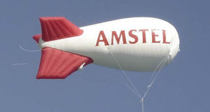

Amstel
 De: La Frikipedia, la enciclopedia extremadamente seria.
De: La Frikipedia, la enciclopedia extremadamente seria.

|
ATENCIÓN
Este artículo es un truño, es sólo un esbozo de un artículo o es demasiado corto o el que lo ha escrito se cree que esto es un vil diccionario. Su autor puede estar bajo los efectos del alcohol o ser un inútil. Quizá haya pistas en la discusión. ¡Mejora la Frikipedia ampliando y mejorando el artículo!
|
| De la serie alimentos y otras vainas:
|
|
|
| Nombre:
|
Amstel
|
| Tipo de Comida:
|
afrodisiaco
|
| ¿Como se Come?
|
???
|
| ¿De donde Proviene?
|
Jeropa
|
| Ingrediente Basico:
|
porras, granos de cebada, harto hielo, uñas de wombat y un ingrediente secreto parecido a la coca cola solamente que este viene de la obra y gracia de Chuck Norris
|
| Forma de Presentación
|
en vasi, en la boca, con la pija
|
| Sabor:
|
a gloria
|
¡Si piensas que buscando Amstel™ te van a regalar una caja de cerveza gratis vas listo!
Bien, Amstel™ no es si no una marca de cerveza congelada a -265 grados kelvin.
Es un invento oriental a base de gránulos de carbón, positrones ionizados, uñas negras y levadura de manteca africana roja.
A.M.S.T.E.L.
Estas siglas contienen un significado subliminal que revela secretos insospechados del vaticano:
- Amigo Mío Solo Tu Estilista es Lila.
- Amstel Mi Servesa, Tiene Esperiencias de Leñadora.
- Amigo de Mierda, Solo Tienes El Lumbago.
- ¡Ahora de Mi Sofá Te Estás Levantando!
- Antes Mira Si Tienes El Localizador...
- Amigo Mío Solo Tu Eres Lila.
- Amigo Mio Solo Tú Eres Leñador.
- A Mi Solo me Tendrás El Lunés...
- Amistad Mútua Sociedad en Tendencias Electricas Libertad.
- Ante Mi Soledad Te Espero con Libertad.
- Amigo Mío Solo Tú Entrenas Liendres.
Efectos nucleares
Con beber una sola gota de este satírico producto... podrás:
- Tener superpoderes.
- Hipervisibilidad.
- Hipertensión.
- Super vómitos.
- Acidez visual.
- Pelo rosa.
- Ver pinguinos por la calle.
- Ver muertos en ocasiones.
- Ver a Dios.
- Verte a ti!
- Verme a mí!!!.
- Ver piratas jugando al futbol en tu armario
Y si tomas mas de 2 gotas... pos no podrás:
- Ser Friki durante 62 décimas de segundo.
- Montar a caballo.
- Conducir.
- Ir a la pata coja cojiendote de la nariz, y tocarte con el culo el píloro.
- Hacer el pino.
- Hacerse el muerto (ah no... eso si se puede xD).
- Ligar.
- Hacer un artículo cuerdo en la Frikipedia (eso es imposible xD).
- Hacer un artículo de risa en la Wikipedia.
- Ser la almóndiga derecha de Dios.
- Tocarte con la nariz la nuca, haciendo el pino en calzoncillos y a la vez tomándote una copa de agua mineral bailando el aserejé.
¿Quienes estan bajos los efectos del Amstel?
 Una bomba atomica producida por Amstel para destruir el mundo
Autor(es):
- Fordus
- Frikiman
- Alex2610
- El Xarlie
- Lmperium
- Wwtawriter112
- Frikih
- SeSteve
- Cibercrank
- Dark temptation
Frikipedia 2005-2016, Licencia
GFDL 1.2 - Extraído por FrikiLeaks